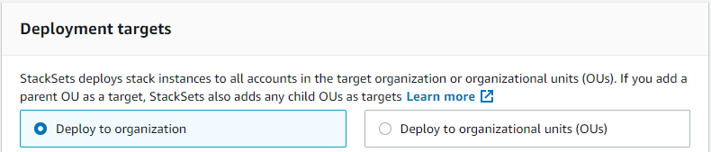

Le traduzioni sono generate tramite traduzione automatica. In caso di conflitto tra il contenuto di una traduzione e la versione originale in Inglese, quest'ultima prevarrà.
Aggiunta di stack a un set di stack
Quando crei un set di stack, puoi creare gli stack per quel set. AWS CloudFormation ti consente inoltre di aggiungere più stack per account e Regioni aggiuntivi in qualsiasi momento dopo la creazione del set di stack. È possibile aggiungere istanze di stack utilizzando la console AWS CloudFormation o i comandi AWS CloudFormation nell'AWS CLI. In questa procedura, vengono aggiunte istanze di stack per un'ulteriore Regione al set di stack creato in Creazione di un set di stack.
Argomenti
Aggiunta di istanze di stack al set di stack utilizzando la AWS Management Console
Apri la console di AWS CloudFormation all'indirizzo https://console.aws.amazon.com/cloudformation
. -
Nel riquadro di navigazione scegliere StackSets. Nella pagina StackSets, seleziona il set di stack creato in Creazione di un set di stack.
-
Con il set di stack selezionato, scegliere Add new stacks to StackSet (Aggiungi nuovi stack a StackSet) dal menu Actions (Operazioni).

-
Nella pagina Set deployment options (Imposta opzioni di distribuzione), fornire gli account e le Regioni in cui si desidera aggiungere stack ai set di stack.
AWS CloudFormation distribuirà gli stack negli account specificati all'interno della prima Regione, quindi passerà a quella successiva e così via, purché il numero di distribuzioni non riuscite non superi una tolleranza di errore specificata.
-
[Autorizzazioni gestite dal cliente] Per Deployment targets (Destinazioni di distribuzione), scegliere Deploy stacks in accounts (Distribuisci stack in account). Incollare i numeri di account target nella casella di testo, separando più numeri con virgole.
[Autorizzazioni gestite dal servizio] Per Deployment targets (Destinazioni di distribuzione), scegliere gli account dell'organizzazione a cui eseguire la distribuzione.
-
Scegliere Deploy to organization (Distribuisci all'organizzazione per eseguire la distribuzione a tutti gli account dell'organizzazione.
 -
Scegliere Deploy to organizational units (OUs) (Distribuisci alle unità organizzative) per eseguire la distribuzione a tutti gli account in specifiche unità organizzative. Scegliere Add another OU (Aggiungi altra unità organizzativa) e quindi incollare l'ID dell'unità organizzativa di destinazione nella casella di testo. Ripetere per ogni nuova unità organizzativa di destinazione. StackSets usa come destinazione anche tutte le unità organizzative figlio delle destinazioni selezionate.

Nota
Se aggiungi un'unità organizzativa che il set di stack usa già come destinazione, StackSets crea nuove istanze di stack in tutti gli account dell'unità organizzativa che non dispongono già di istanze di stack dal set di stack, ad esempio gli account aggiunti all'unità organizzativa dopo la creazione del set di stack e con le implementazioni automatiche disabilitate.
-
-
Per Deployment regions (Regioni di distribuzione), scegliere Stati Uniti occidentali (California settentrionale). Verranno creati nuovi stack nella Regione Stati Uniti occidentali (California settentrionale) per le destinazioni specificate.
Se si aggiungono più Regioni, l'ordine delle Regioni in Specify regions (Specifica Regioni) determina l'ordine di distribuzione.
-
Per Deployment options (Opzioni di distribuzione):
-
Per Maximum concurrent accounts (Num. massimo account concorrenti), mantenere i valori predefiniti di Number (Numero) e 1.
In questo modo, AWS CloudFormation distribuirà lo stack in un solo account alla volta.
-
Per Failure tolerance (Tolleranza di errore), mantenere i valori predefiniti di Number (Numero) e 0.
In questo modo, un massimo di una distribuzione di stack può avere esito negativo in una delle Regioni specificate prima che AWS CloudFormation interrompa la distribuzione nella Regione corrente e l'annulli nelle altre Regioni. Se si desidera impostare una tolleranza di errore superiore in CloudFormation, aumentare questo valore.
Seleziona Successivo.
-
-
-
Nella pagina Specify overrides (Specifica sostituzioni), lasciare i valori delle proprietà specificati. Non verrà sostituito alcune valore delle proprietà per gli stack che verranno creati. Seleziona Successivo.
-
Nella pagina Review (Revisione), verificare le proprie scelte e le proprietà del set di stack. Per apportare modifiche, scegliere Edit (Modifica) nell'area in cui si desidera modificare proprietà. Prima di poter creare nuovi stack, è necessario indicare nella casella di controllo nell'area Capabilities (Funzionalità) per prendere atto che alcune delle risorse create con il set di stack potrebbero richiedere nuove risorse e autorizzazioni IAM. Per ulteriori informazioni sulle possibili autorizzazioni richieste, consulta Accettazione delle risorse IAM nei modelli AWS CloudFormation in questa guida. Quando sei pronto per creare le istanze di stack, scegli Submit (Invia).

-
AWS CloudFormation avvia la creazione di istanze di stack. Visualizzare l'avanzamento e lo stato della creazione delle istanze di stack nel set di stack nella relativa pagina dei dettagli che si apre quando si sceglie Submit (Invia). Una volta completate, le nuove istanze di stack devono essere elencate nella scheda Stack instances (Stack di istanze).

Aggiunta di istanze di stack al set di stack utilizzando la AWS CLI
Quando si agisce come amministratore delegato, è necessario impostare il parametro --call-as su DELEGATED_ADMIN ogni volta che si esegue un comando StackSets.
--call-asDELEGATED_ADMIN
-
Aprire AWS CLI.
-
Esegui il comando
create-stack-instances.[Autorizzazioni gestite dal cliente] Specificare gli ID account per cui si desidera creare istanze dello stack.
aws cloudformation create-stack-instances --stack-set-namemy-awsconfig-stackset--accounts '["account_id"]' --regions '["eu-west-1", "us-west-2"]'[Autorizzazioni gestite dal servizio] Specificare l'ID (root) dell'organizzazione o gli ID unità organizzativa per cui si desidera creare istanze dello stack. In questo esempio sono specificate le unità organizzative con gli ID
ou-rcuk-1x5j1lwoeou-rcuk-slr5lh0a.aws cloudformation create-stack-instances --stack-set-nameStackSet-myApp--deployment-targets OrganizationalUnitIds='["ou-rcuk-r1qi0wl7"]' --regions '["eu-west-1", "us-west-2"]'Nota
Se aggiungi un'unità organizzativa che il set di stack usa già come destinazione, StackSets crea nuove istanze di stack in tutti gli account dell'unità organizzativa che non dispongono già di istanze di stack dal set di stack, ad esempio gli account aggiunti all'unità organizzativa dopo la creazione del set di stack e con le implementazioni automatiche disabilitate.